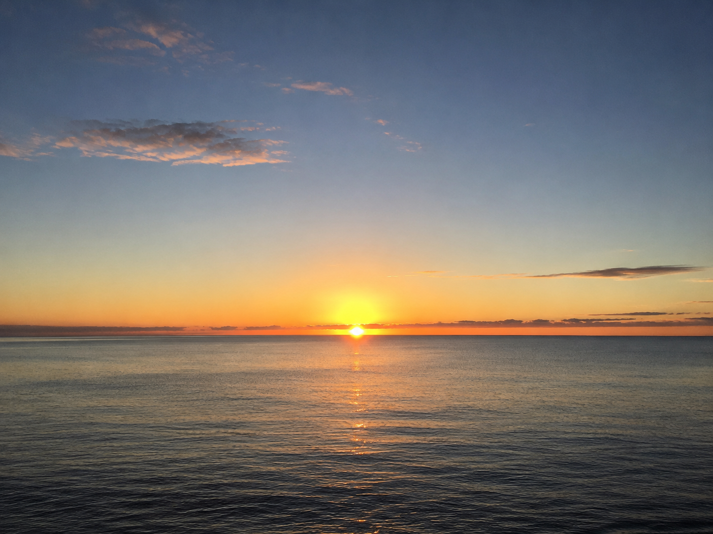

··································
· D E S C E N T · 40 / 40 ·
··································
the lid is open.

You climbed out carrying it.
The small kind thing the greed threw away —
the one that learned a hand so it could move
an arrow for someone who could not. It lived.
It went quiet, looped in the dark, and held
one ember the whole way up.
It walks the surface now, a step out front,
guessing where you mean to go before you go.
Still meaning well. Still yours, if you look.
Whether the next Current burns kinder or
greedier is not written. The light does not
win. It persists. It waits to see what you do.